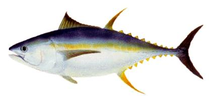
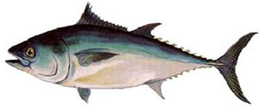
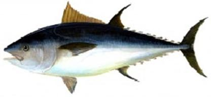
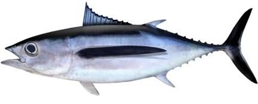
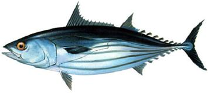

ปลาทูน่าครีบเหลือง
ชื่อสามัญภาษาอังกฤษ YELLOWFIN TUNA
ชื่อวิทยาศาสตร์ Thunnus albacares (Bonnaterre,1788)
วงศ์ Scombridae , subfamily: Scombrinae

ปลาทูน่าตาโต
ชื่อสามัญภาษาอังกฤษ BIGEYE TUNA
ชื่อวิทยาศาสตร์ Thunnus obesus (Lowe, 1839)
วงศ์ Scombridae , subfamily: Scombrinae

ปลาทูน่าครีบน้ำเงินใต้
ชื่อสามัญภาษาอังกฤษ SOUTHERN BLUEFIN TUNA
ชื่อวิทยาศาสตร์ Thunnus maccoyii (Castelnau, 1872)
วงศ์ Scombridae , subfamily: Scombrinae

ปลาทูน่าครีบน้ำเงิน
ชื่อสามัญภาษาอังกฤษ NORTHERN BLUEFIN TUNA
ชื่อวิทยาศาสตร์ Thunnus thynnus (Linnaeus, 1758)
วงศ์ Scombridae , subfamily: Scombrinae

ทูน่าครีบยาว
ชื่อสามัญภาษาอังกฤษ LONGFIN TUNA, ALBACORE
ชื่อวิทยาศาสตร์ Thunnus alalunga (Bonnatere, 1788)
วงศ์ Scombridae , subfamily: Scombrinae

ปลาทูน่าท้องแถบ
ชื่อสามัญภาษาอังกฤษ SKIPJACK TUNA
ชื่อวิทยาศาสตร์ Katsuwonus pelamis (Linnaeus, 1758)
วงศ์ Scombridae , subfamily: Scombrinae
สายพันธ์ุปลาทูน่า
ปลาทูน่าครีบเหลือง
ปลาทูน่าครีบเหลืองเป็นปลาที่อาศัยอยู่ทั่วไปแต่ไม่พบในทะเลเมดิเตอเรเนียน
เป็นปลาที่มีการอพยพย้ายถิ่นอยู่ตลอดเวลา
โดยปกติจะอยู่ในระดับผิวน้ำจนถึงระดับลึก 100 เมตร
และมักอาศัยอยู่บริเวณแนวสันเขาใต้น้ำบางครั้งพบรวมฝูงอยู่กับพวกปลาโลมาหรืออยู่กับขยะที่ล่องลอยในมหาสมุทร
อาหารเป็นปลา หมึก และพวกปูและกุ้ง
ปลาทูน่าครีบเหลืองจะมีความอ่อนไหวกับปริมาณออกซิเจนที่ละลายอยู่ในน้ำที่มีปริมาณต่ำ
ขนาดของปลาทูน่าครีบเหลืองที่เคยจับได้และมีรายงานไว้ยาวสุด 239 เซนติเมตร
โดยวัดจากด้านหน้าสุดของหัวถึงส้อมหาง น้ำหนักสูงสุดที่มีเคยมีการรายงานไว้ 200 กิโลกรัมและอายุสูงสุด 9
ปี
ปลาทูน่าตาโต
เป็นปลาทูน่าขนาดใหญ่ที่อาศัยอยู่ในมหาสมุทรในเขตร้อน
การแพร่กระจายของปลาชนิดนี้ขึ้นอยู่กับสภาวะภูมิอากาศตามฤดูกาลที่มีผลต่ออุณหภูมิของน้ำ
พบแพร่กระจายทั่วไปในมหาสมุทรแอตแลนติก มหาสมุทรอินเดียและมหาสมุทรแปซิฟิก
มีลักษณะคล้ายปลาทูน่าครีบเหลือง
มีรายงานพบตัวยาวที่สุด 250 เซนติเมตร น้ำหนักสูงสุดที่เคยพบ 210 กิโลกรัม อายุสูงสุดที่มีรายงานไว้คือ
11 ปี
ปลาทูน่าตาโตจะจับได้โดยเครื่องมือประมงอวนล้อมซึ่งมักจะจับได้ปลาทูน่าตาโตที่โตเต็มวัยขนาดเล็กและปลาทูน่าวัยอ่อนหรืออาจจับได้ด้วยเบ็ดตวัดปลาทูน่า
เบ็ดลาก แต่วิธีทำการประมง ที่สำคัญที่สุดในการจับปลาทูน่าตาโตขนาดใหญ่ที่อาศัยอยู่น้ำลึกได้แก่เบ็ดราว
ปลาทูน่าครีบน้ำเงินใต้
ปลาทูน่าสีน้ำเงินใต้เป็นปลาทูน่าขนาดใหญ่ที่อาศัยอยู่ในมหาสมุทรในเขตอบอุ่นในระดับความลึก 50-2743 เมตร
พบแพร่กระจายอยู่ในทะเลเขตอบอุ่นถึงเขตหนาวในมหาสมุทรแอตแลนติก มหาสมุทรอินเดียและมหาสมุทรแปซิฟิก
แต่ในระยะวางไข่ปลาขนาดใหญ่จะอพยพไปบริเวณทะเลเขตร้อนทางฝั่งตะวันตกของออสเตรเลีย
อาหารจะเป็นพวกปลาชนิดต่างๆ รวมทั้งหมึก และพวกกุ้งและปู
มีรายงานว่าเคยพบปลาชนิดนี้ยาวถึง 245 เซนติเมตร
และเคยพบน้ำหนักสูงสุด 260 กิโลกรัมอายุที่พบมากที่สุดคือ 20 ปี
ปลาทูน่าชนิดนี้นิยมรับประทานเป็นปลาดิบ การประมงหลัก
ได้แก่การทำเบ็ดราวบริเวณประเทศออสเตรเลียและนิวซีแลนด์
ปลาทูน่าครีบน้ำเงิน
ปลาทูน่าสีน้ำเงินเป็นปลาทูน่าขนาดใหญ่ในมหาสมุทรในเขตอบอุ่น
เป็นปลาอพยพย้ายถิ่น พบแพร่กระจายบริเวณมหาสมุทรแอตแลนติกฝั่งตะวันตกแถบประเทศแคนนาดา ไปจนถึง
บริเวณนอกฝั่งของอัฟริกาใต้
ปกติจะอาศัยอยู่ในมหาสมุทร
แต่ก็สามารถมาอาศัยอยู่บริเวณใกล้ฝั่งและสามารถทนต่ออุณหภูมิที่เปลี่ยนแปลงได้กว้าง
มีรายงานว่าเคยพบยาวถึง 458 เซนติเมตร และน้ำหนักที่เคยพบมากสุดคือ 684 กิโลกรัม
อยุสูงสุดที่มีรายงานคือ 15 ปี
เป็นที่นิยมมากในประเทศญี่ปุ่นทั้งรับประทานสดและบรรจุกระป๋อง
แต่ปัจจุบันเป็นชนิดที่หายากเนื่องจากการทำประมงมากจนไม่สามรถเกิดทดแทนได้ทัน
ปลาทูน่าครีบยาว
เป็นปลาทูน่าขนาดใหญ่ที่อาศัยอยู่ในมหาสมุทรในเขตอบอุ่น
พบแพร่กระจายอยู่ในมหาสมุทรทั้งเขตร้อนจนถึงเขตอบอุ่นรวมทั้งแถบทะเลเมดิเตอเรเนียน
และมักจะสับสนกับปลาทูน่าตาโตวัยอ่อนเนื่องจากมีลักษณะคล้ายกันมากโดยเฉพาะลักษณะของท้องที่ยาวและกลม
ลักษณะที่เห็นได้ชัดของปลาทูน่าชนิดนี้คือ
ความกว้างที่สุดของลำตัวปลาอยู่ทางท้ายลำตัวมากกว่าปลาทูน่าชนิดอื่นครีบท้องจะยาวถึง 30% ของความยาวตัว
(วัดจากหัวถึงส้อมหาง) ครีบหลังแยกออกเป็นสองส่วนอย่างชัดเจน เมื่อผ่าท้องพบว่าด้านล่างของตับจะเป็นลาย
นิยมนำมารับประทานสด รมควัน แช่แข็ง และบรรจุกระป๋อง
สหรัฐอเมริกาทำการประมงปลาทูน่าชนิดนี้ในมหาสมุทรแปซิฟิกโดยต้องได้รับการรับรองจาก Marine Stewardship
Council จึงมีการบริหารจัดการที่ดี
ปลาทูน่าท้องแถบ
ปลาทูน่าท้องแถบเป็นปลาทูน่าขนาดเล็กที่อาศัยอยู่ในมหาสมุทรในเขตร้อน
พบแพร่กระจายอยู่ในมหาสมุทรเขตร้อนแต่ไม่พบทางด้านตะวันออกของทะเลเมดิเตอเรเนียนและทะเลดำ
เป็นปลาที่อพยพย้ายถิ่น มีรายงานว่าเคยพบปลาทูน่าท้องแถบมีความยาวถึง 110
เซนติเมตร น้ำหนักสูงสุดที่เคยพบคือ 34.5 กิโลกรัม อายุสูงสุดที่มีรายงานไว้คอ 12 ปี
ปลาทูน่าท้องแถบเป็นปลาที่นิยมรับประทานสด รมควัน แช่แข็ง และเป็นวัตถุดิบในการทำปลาทูน่าบรรจุกระป๋อง
ในปัจจุบันปลาทูน่าท้องแถบเป็นปลาทูน่าที่มีอัตราการจับสูงสุดแทนปลาทูน่าครีบเหลือง
ปลาทูน่าท้องแถบอาศัยบริเวณผิวน้ำเกือบทั้งหมดจับได้จากเครื่องมือประมงอวนล้อม เบ็ตตวัดปลาทูน่า
แต่สามารถจับได้บ้างด้วยเครื่องมือเบ็ดราว เบ็ดลาก และอวนลอย
โดยทั่วไปมักจะสร้างเครื่องล่อปลาให้รวมฝูงหรือซั้ง เพื่อล่อปลาโอแถบให้อยู่รวมกันแล้วจึงทำการประมง